Evolving a harness is easy. Evolving one that generalizes is not.
An LLM system is shaped not only by its model, but by its harness: the executable code that decides what the model sees, which tools run, and how intermediate outputs become an answer.
Recursive self-improvement lets a coding agent rewrite that harness from feedback. We study it in agentic video understanding, where harnesses must coordinate frame selection, retrieval, perception tools, reflection, memory and multi-agent roles — and where rich videos invite a proposer to specialize to what it sees.
We first build VideoHarness-BRSI, a baseline recursive self-improvement loop around a frozen VLM. It rivals hand-engineered systems, but across 4,000+ evolved candidates its validation wins often fail to transfer. All of its failures trace to one root: the same imperfect validation verdict decides both which harness is kept and where the proposer searches next.
We therefore propose VideoHarness-SRSI, an evidence-governed framework in which every search decision rests on evidence that is transferable, sufficient, and gathered before search commits.
DiagnosisRecursive evolution discovers competitive harnesses, yet suffers three interconnected failure modes: validation overfitting, search-budget dilution, and the early-experience trap.
FrameworkSRSI combines content-free proposer feedback, an instrumented warm-up, isolated probe–race branches, and factorial composition before joint refinement.
EvaluationOn Video-MME, LongVideoBench, OVO-Bench and MomentSeeker, SRSI raises the mean held-out score by 6.2% and cuts the validation–test gap by 37.9% over BRSI.
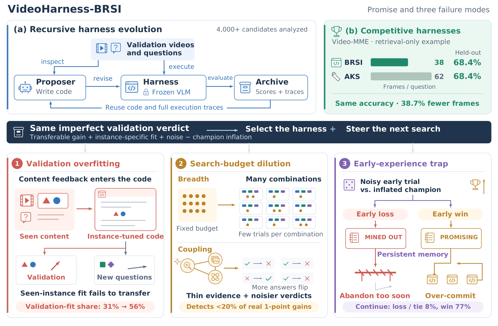
VideoHarness-BRSI. (a) A coding proposer inspects validation videos and questions, revises the harness around a frozen VLM, and archives scores and traces that later iterations reuse. (b) In a retrieval-only run on Video-MME, the evolved harness matches the strongest hand-designed AKS variant with 38.7% fewer frames. The same validation verdict both selects the harness and steers the next search — mixing the true gain with validation fit, noise, and champion inflation.
Finding 1 · Recursive evolution works
Watch a retrieval strategy evolve — 50 iterations, 138 candidates
Starting from a simple clip_topk seed on Video-MME, BRSI improves validation accuracy in several distinct steps rather than a single lucky jump, from 66.2% to 74.7%. The strategy names are chosen autonomously by the proposer. Press play, or drag the slider; hover a dot to see what the proposer built.
Best-so-far validation accuracy · Video-MME (450 questions)
Line: running champion · Band: range of candidates proposed in that iteration · Stars: Pareto-frontier milestones
iter0 / 50
Held-out accuracy vs. frames per question
2,250 Video-MME questions never seen during evolution
Recursive evolution discovers video harnesses that rival expert designs. From a simple retrieval seed, BRSI raises validation accuracy by 8.5 points and deploys medium_augspread, which matches the strongest hand-designed AKS variant on held-out data (68.4%) with 38.7% fewer frames (38 vs. 62).
Findings 2–4 · Where it breaks
One noisy signal, three failure modes
The loop learns from a single signal, the validation verdict δ̂ = V(H) − V(Hinc): how much a candidate beats the current champion on validation. Only one of its four terms carries over to unseen questions. Hover a red term to see which failure mode inflates it.
=
+
−
+
Definitionclick a term above to switch · red terms also open their failure mode
δ̂verdict
δ̂ = V(H) − V(Hinc), the difference between a candidate’s validation accuracy and the current champion’s. This is the only number the loop ever sees: it decides both which harness is kept and where the proposer searches next.
Each validation score itself splits as V(H) = μ(H) + S(H) + e(H): accuracy on new questions, a fit that helps only on the validation questions, and chance noise on this particular validation set. Only Δ below carries over to held-out data; S, ω and ε are errors that make the verdict misstate it.
Δtrue gain
Δ = μ(H) − μ(Hinc): how much more accurate the candidate is than the champion on unseen questions. This is what we actually want to improve.
transfers to held-out The only term that carries over. Evolution works exactly as far as δ̂ tracks Δ; it goes wrong whenever one of the three error terms outweighs Δ.
Svalidation fit
S = S(H) − S(Hinc): accuracy gained only on the validation questions, because the proposer saw them while writing the harness. It is zero for harnesses written without seeing the questions.
error Inflated by Finding 2 · validation overfitting: the more the proposer sees (question text, options, frames), the larger S grows.
ωchampion inflation
ω = 𝔼[e(Hinc)] > 0: the champion’s expected noise. The champion is not a random harness but the one with the highest validation score so far, so its luck is positive on average (the optimizer’s curse). Every new candidate is measured against this inflated score, so its verdict is shifted down by ω.
error Decides irreversibly in Finding 4 · early-experience trap: every new direction starts about 1 point behind.
εnoise
ε = e(H) − e(Hinc) + ω: the zero-mean remainder of the noise difference once the inflation is separated out. Its standard deviation σ grows with the number of validation answers the candidate changes relative to the champion.
error Inflated by Finding 3 · search-budget dilution (coupled edits flip more answers, fewer evaluations per decision) and dominates early verdicts in Finding 4 · early-experience trap.
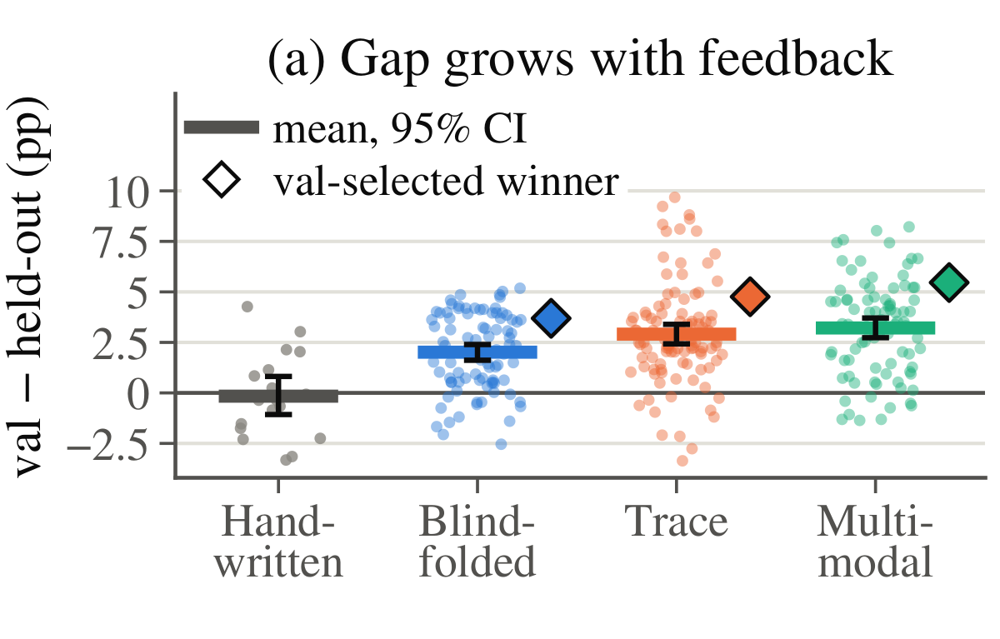
What happens. Validation − held-out gap of harnesses evolved under three feedback arms on LongVideoBench.
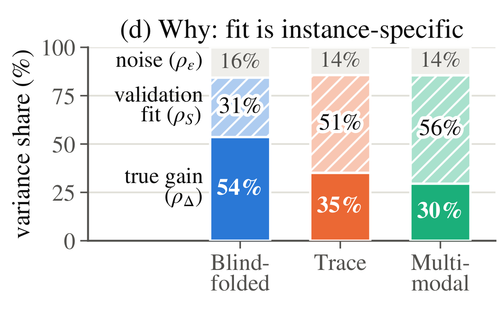
Why. Shares of validation-score spread due to true gain (ρΔ), validation fit (ρS), and noise (ρε).
Keeping the loop fixed, we vary only what the proposer sees: Blindfolded (per-question correctness + behavioral counters), Trace (+ question text, options, interaction traces), and Multimodal (+ video frames — the full access of BRSI).
The more the proposer sees, the larger the gap. Crucially, the lost transfer goes entirely into fit, not noise: proposers that see question text even quote validation questions in their code comments.
Hide the validation instances from the proposer. It should see how a harness behaves, not what it is evaluated on.
2.0 → 3.2val–test gap (pts), Blindfolded → Multimodal
54% → 30%true-gain share ρΔ
31% → 56%validation-fit share ρS
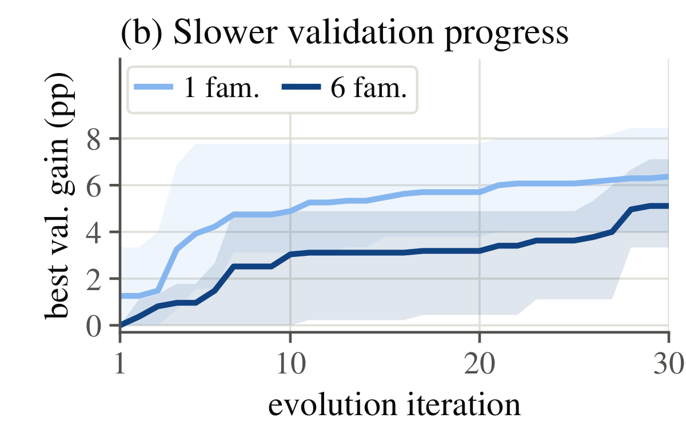
What happens. Best validation gain over seeds on Video-MME: retrieval only (1 family) vs. full harness (6 families), matched budget of 87 candidates.
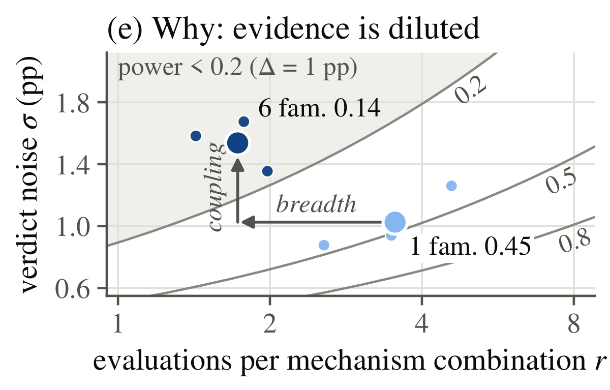
Why. Each run placed by evaluations per mechanism combination r and verdict noise σ; contours mark equal power to detect a 1-point gain.
A larger search space could in principle reach higher accuracy — but it spreads a fixed budget over more mechanism combinations (breadth lowers r), and coupled mechanisms make each edit flip more answers (coupling raises σ).
Even edits touching a single family flip 47.6 validation answers in the full harness, vs. 19.8 with retrieval alone. The full-harness search misses more than four in five real 1-point improvements.
Develop mechanisms separately before combining them. Concentrate evaluations on one mechanism at a time, with local edits, before optimizing interactions.
6.4 vs 5.1validation gain (pts): 1 family vs 6 families
3.5 → 1.7evaluations per combination r
< 0.2statistical power of the full-harness search
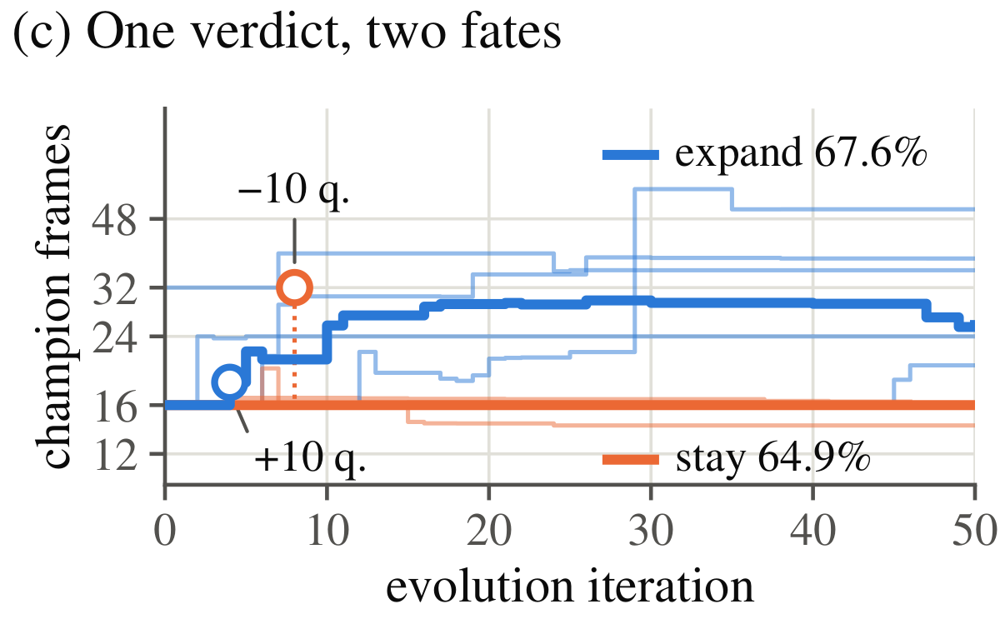
What happens. Champion frame count of retrieval runs on Video-MME. A frame-raising probe wins by +10 questions in one run (18 frames) and loses by −10 in another (32 frames).
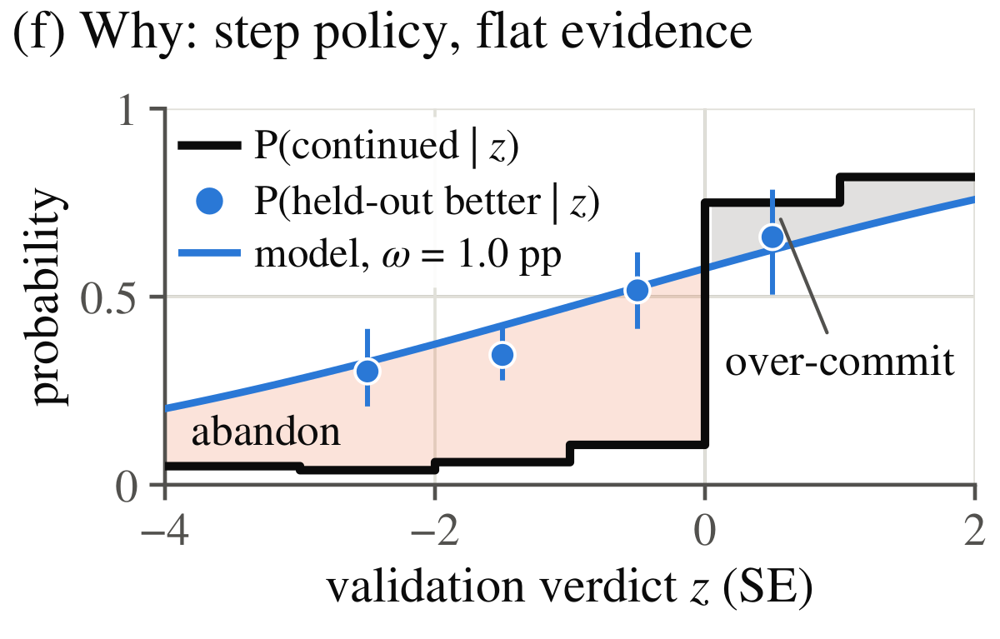
Why. The loop continues a candidate as a step function of its verdict (black), while its true held-out win rate rises gradually (blue).
After losing one early probe, a run writes into its memory that the frame count is "MINED OUT" — and its champion never exceeds 16 frames. Runs that expand the budget reach 67.6% held-out; those that stay reach 64.9%.
Only 8% of early-verdict variation reflects true differences, and champion inflation starts every new direction ~1 point behind. Yet the loop continues 77% of winners and only 8% of the rest; 37% of dropped candidates actually beat the champion on held-out data.
Do not let one noisy verdict close a direction. Early evidence should come from controlled comparisons collected regardless of earlier outcomes.
6 / 12runs never expand the frame budget
64.9 vs 67.6held-out %, stayed vs. expanded
37%of abandoned candidates were better
content-level feedback→transferable evidence
The proposer sees only scores and content-free traces.
joint, coupled search→sufficient evidence
Mechanisms develop in isolated branches, then compose.
outcome-driven exploration→evidence before commitment
An instrumented warm-up measures every mechanism first.
Simple remedies do not help: changing parent selection (greedy, clade-UCB, random) moves deployed held-out accuracy by at most 0.5 points, and starting from a stronger AKS seed lands within the range of simple seeds — every verdict still compares one candidate to a selected champion on the same questions.
Method
VideoHarness-SRSI: evidence before search commits
SRSI keeps the propose–evaluate–accumulate loop of BRSI and changes only the evidence behind its decisions. Each component implements one takeaway.
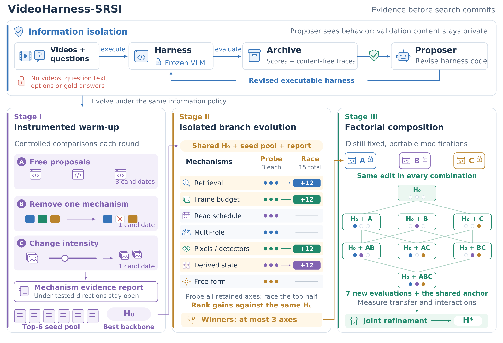
Overview of VideoHarness-SRSI. Top: under information isolation the harness runs on validation videos and questions, but the proposer receives only scores and content-free traces. Bottom: Stage I adds a removal and an intensity change to free proposals each round and selects a seed pool and backbone H0; Stage II evolves each mechanism axis in its own branch from H0 under a probe–race budget; Stage III distills kept axes into fixed modifications, evaluates all combinations, and jointly refines them into H★.
fixes → validation overfitting (S)
The proposer sees how a harness behaves, never what it is tested on
A harness can fit the validation questions only through what the proposer learns about them, so SRSI closes this channel at its source. The harness still executes on the validation videos, but the proposer receives only aggregate accuracy and a content-free trace: per-question correctness under an opaque ID, plus behavioral counters. A deny list on all proposer tools enforces it.
Controlled experiments, collected regardless of earlier verdicts
Each warm-up round contains three free proposals, one removal that deletes one of seven mechanism families, and one intensity change that roughly doubles or halves how much one family is used (e.g. a larger retrieval budget, a detector run on 3 frames instead of 12, or two reflection passes instead of one). Evidence on each mechanism accumulates over many comparisons instead of resting on its first verdict; under-tested mechanisms are flagged as under-explored, not discarded.
When accuracy plateaus, the six best harnesses form a seed pool and the best becomes the shared backbone H0. Each run gathers 11.7 removal and 13.0 intensity contrasts across the families, collected regardless of earlier verdicts, so an early noisy loss can no longer close a direction.
Warm-up round composition5 candidates per round · the structured slots keep every direction measured
fixes → search-budget dilution (ε)
Probe every axis, race the promising half
The harness is split into six fixed axes — retrieval, frame budget, read schedule, multi-role, pixels & detectors, derived state — plus a free-form axis. Each evolves from H0 in its own branch under a template that keeps edits local. Every axis is probed with 3 candidates; the top half race on to 15; at most 3 proceed. Since all branches share H0, champion inflation shifts them alike.
Probe–race on branchesValidation accuracy of each branch candidate vs. the backbone H0 (dashed)
measures → transfer & interactions
Gains found apart need not add up — so test every combination
Each kept axis is distilled into a fixed, portable modification. All 23 combinations are evaluated against H0: seven evaluations, yet each modification's effect is averaged over four comparisons, and the same comparisons measure interactions. Joint refinement then co-optimizes the few mechanisms whose effects are already measured, yielding H★.
Composition latticeValidation accuracy of every factorial cell; color = difference from H0
SRSI in action
SRSI vs. BRSI on every benchmark
Table 1 reports the harness each run deploys. Executor: frozen Qwen3-VL-8B-Instruct; proposer: Claude Opus 5; three seeds per benchmark, and each run deploys its validation-best harness, scored on held-out test data (mIoU on MomentSeeker, accuracy elsewhere). SRSI is best on both validation and held-out test on all four benchmarks, and its lead over BRSI widens from validation to test on three of them.
Method
Video-MME
LongVideoBench
OVO-Bench
MomentSeeker
Val
Test
Val
Test
Val
Test
Val
Test
Fixed hand-written baselines
uniform
60.44
61.64
58.97
59.15
52.76
52.20
11.94
11.43
clip_topk
66.21
63.40
62.33
62.07
51.94
53.32
16.58
17.98
tool_survey
65.78
62.27
59.42
60.49
50.51
51.28
16.72
17.66
reflect_loop
60.44
60.04
62.11
60.61
51.33
55.36
16.23
17.66
debate_pair
63.78
61.42
57.40
55.56
44.58
45.86
16.42
17.92
memo_multiturn
63.11
58.98
58.52
59.93
55.42
54.65
15.91
16.00
Evolved harnesses
VideoHarness-BRSI
72.2±1.8
66.5±1.2
70.2±0.3
66.6±1.0
72.9±2.1
67.2±1.7
23.8±0.7
19.0±1.8
VideoHarness-SRSI
75.0±1.9
70.1±1.0
71.1±2.0
67.3±1.0
73.8±2.4
72.5±3.1
25.3±0.3
23.0±0.7
Table 1. Validation and held-out test scores. Baselines are single runs; evolved harnesses are mean ± sd over three seeds. Test columns are shaded.
Did SRSI fix the failure modes?
Re-measuring the Section 3 diagnostics on the runs of Table 1.
Transfer coefficient β
0.30→0.52
Share of a validation lead that reappears on held-out data (BRSI full harness → SRSI).
Power to detect a 1-pt gain
0.13→0.49
Branches concentrate evaluations: r rises from 1.55 to 9.80 per decision unit.
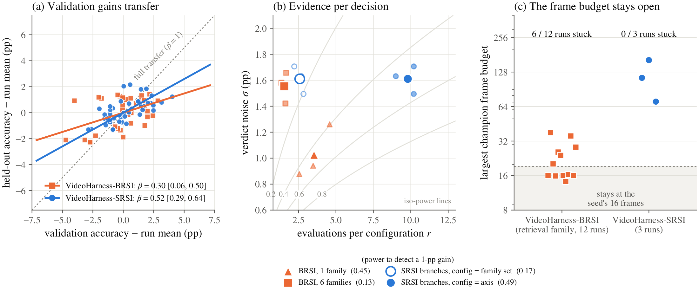
Re-measuring the three diagnostics on SRSI (Video-MME). (a) Held-out vs. validation accuracy of tested candidates, centered within run; slopes are the transfer coefficient β. (b) Evaluations per configuration vs. verdict noise, with iso-power contours. (c) Largest frame budget held by the running champion.
Results
Stronger harnesses that transfer better
The setup and full numbers are in Table 1 above. Here we summarize them: how much SRSI gains on held-out data, how much it narrows the validation–test gap, and whether the gain survives when SRSI is held to BRSI's frame budget.
Mean held-out score
54.83→58.23
+6.2% relative over BRSI; +8.52 pts over the best fixed baseline per benchmark.
Mean validation–test gap
4.95→3.08
−37.9%; the gains come mostly from better transfer, not tighter validation fit.
Gain at a matched frame budget
+1.66pts
About half of the deployed gain (+3.40) remains when SRSI is capped at BRSI's frame budget.
Per-benchmark comparisonMean over three seeds; error bars show sample std
Best fixed baselineVideoHarness-BRSIVideoHarness-SRSI
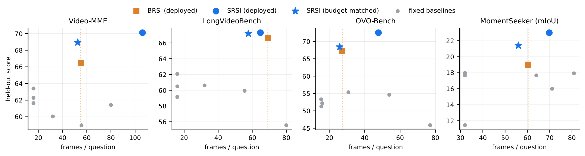
Is it just a bigger budget? Held-out score vs. frames per question. Deployed BRSI (squares), deployed SRSI (circles), budget-matched SRSI (stars), fixed baselines (gray). On every benchmark, the budget-matched SRSI harness lies above BRSI without using more frames: +2.43 (Video-MME), +0.59 (LVB), +1.22 (OVO-Bench), +2.41 (MomentSeeker).
Ablations
Every component earns its place
Instrumented warm-up
A free-only warm-up with the same budget reaches nearly the same validation accuracy (71.85 vs. 71.70), but transfers worse: 67.1 vs. 69.0 held-out for the backbone, 67.3 vs. 70.1 for the deployed system. The removal and intensity slots supply better evidence (11.7 vs. 4.3 removal contrasts per run), not a stronger champion.
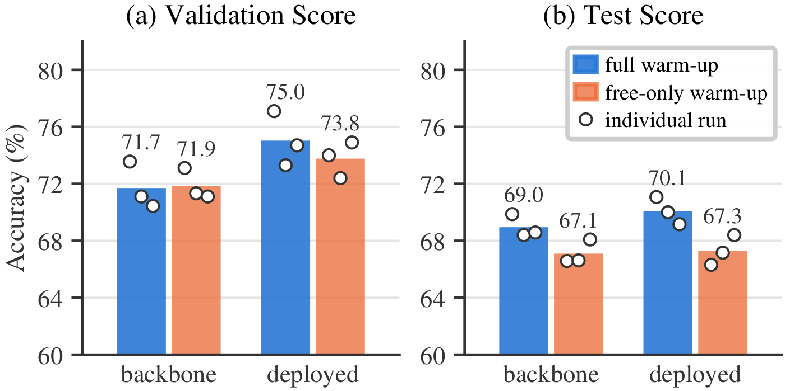
Who should choose the axes?
Automatic axes (proposer-defined): none of 9 branches improves on its backbone. Manual axes (researcher-defined): best validation (75.9) but lower held-out (68.2). Fixed templates of SRSI generalize best (70.1): fixing axes in advance avoids both missed directions and overfit charters.
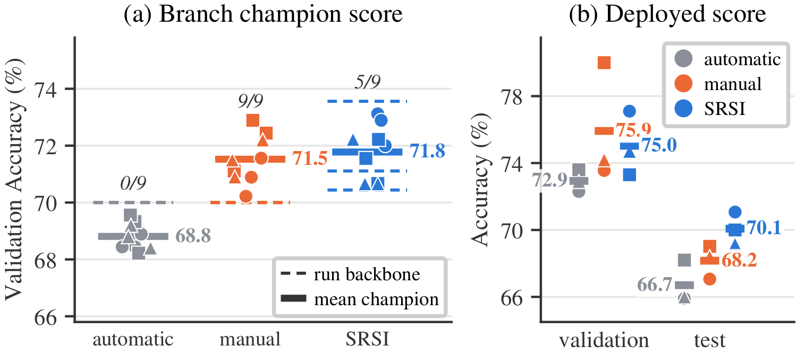
Information isolation · LongVideoBench held-out
All three settings reach ~71% validation; the differences lie entirely in transfer. Withholding question content alone recovers ~80% of the way to SRSI.
SRSI stays effective with weaker proposers — all beat every fixed baseline (best 63.4), and with Sonnet 5 it still surpasses BRSI driven by Opus 5 (orange line, 66.5). Accuracy tracks proposer capability.
Claude Opus 5
70.1
Claude Sonnet 5
67.7
Claude Opus 4.8
65.8
Axis starts at 60%.
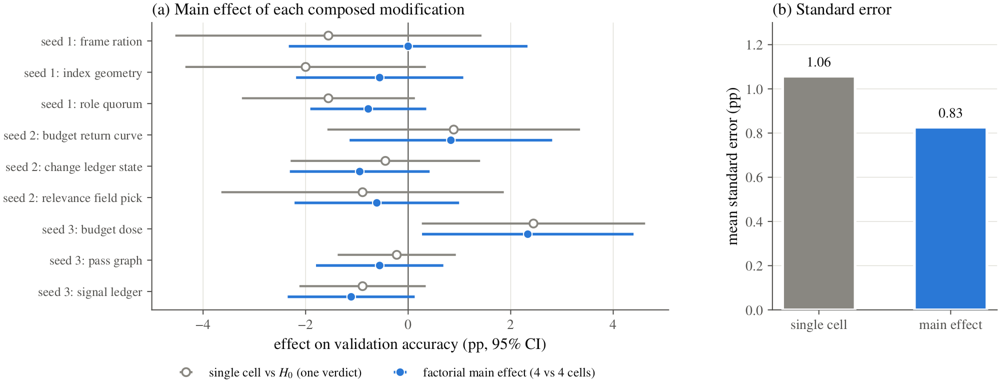
Factorial composition. Effect of each composed modification from its single cell vs. H0 (one verdict, gray) and as the factorial main effect (blue); bars are 95% CIs. Main effects have smaller standard errors (0.83 vs. 1.06) and correct single-cell readings; all interactions stay within ±1.2 pts.
Discovered strategies
What the proposer actually built
A gallery of harnesses discovered by SRSI on Video-MME: each run's warm-up champion (the backbone H0), the best candidate of every raced branch axis, and the deployed final harness. Names, component tags and hypotheses are written by the proposer itself — without ever seeing a video or a question.
Qualitative examples
Evolved harnesses at work
Two held-out Video-MME questions where both seed harnesses answer wrong and the deployed SRSI harness of seed 1, crossorder_triad (71.1% test vs. 63.4% for clip_topk), answers right. Both videos are long pet compilations, and the answer sits in a few seconds of one clip.
Three query views. Each option text on its own (O), question plus options as one string (J), and each option padded with the question’s content words (S). Each view is retrieved with CLIP-B and CLIP-L and fused by reciprocal rank.
50 frames per reader. 35 time-equal coverage cells each keep their best-ranked frame, and the remaining 15 go to the top frames of each option.
Permuted readers, content vote. O reads the options in their given order, J in reverse, S rotated by two. Each letter is mapped back to the option it names. If O and J agree, S is skipped.
Proposer’s hypothesis“The model’s output is not [flat across letters]: uniform answers B 142 times … That excess sits on the LETTER, not on the content, and every member of the parent reads the identical option list in the identical order — so a choice that was driven by an option’s POSITION is made the same way by all three, survives the plurality untouched.”
Video-MME · held-out testAction recognition8-min pet compilation576-1
What does the squirrel do in this video?
AEating food.
BWrestling with a doll.
CClimbing on a tree.
DLying down and sleeping.
0 sthe ≈8 s squirrel clip · the 16 frames uniform reads480 s
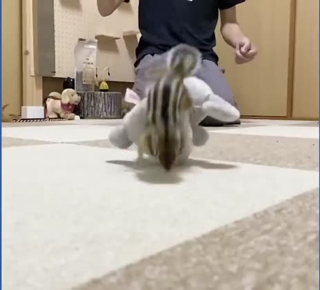
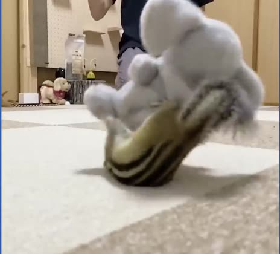
The answer lives in one ≈8 s clip (≈12–20 s) of a 480 s compilation. uniform’s frames land at 0 s and 32 s, on either side of it.
B Wrestling with a doll.✓plurality over options, not letters
Member O, which reads the options in their given order, repeats the seeds’ “climbing on a tree”. J and S read their own frame sets with the options permuted and both name “wrestling with a doll”. J’s raw letter is C, the same letter O gave, but in J’s order slot C holds option B. A vote over letters would treat J as agreeing with O; SRSI votes over option contents, so the permuted readers outvote O.
Video-MME · held-out testAttribute perception9-min pet compilation573-1
What color does the fish turn when fed a sea urchin by a man?
AYellow-black.
BBlack-white.
CGreen-yellow.
DBlue-yellow.
0 sthe ≈11 s fish clip · the 16 frames uniform reads542 s
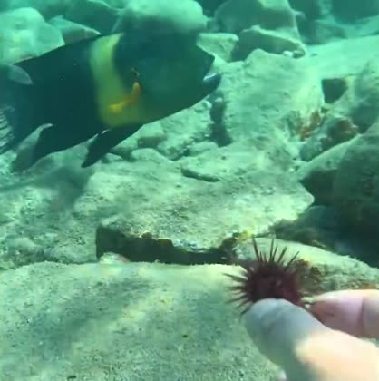
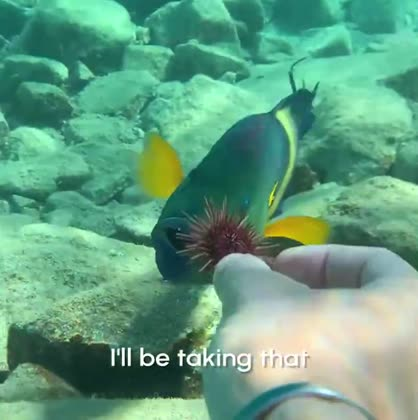
The fish clip runs from ≈133 s to ≈144 s. The color change happens in a few seconds of it: dark with a yellow band as it approaches, blue with yellow fins as it takes the urchin.
D Blue-yellow.✓plurality over options, not letters
The two seeds disagree with each other and are both wrong. O picks “yellow-black”, the fish’s look before it is fed. J again answers the letter A, the same letter as O, but its slot A is option D (“blue-yellow”). S agrees with J on content from a third slot position, so the answer flips to the right one.
Predictions, read counts and frame counts come from the evaluation logs. Key frames and clip spans from the source video are shown for reference.
Citation
BibTeX
@article{lin2026videoharnesssrsi,
title = {VideoHarness-SRSI: Structured Recursive Self-Improvement
for Video Understanding Harness},
author = {Lin, Zihao and Dong, Haoyu and Xu, Haobo and Chang, Chi-Chih and
Ning, Xuying and Xia, Yinglong and Yang, Shuang and Zhao, Zhuokai and
Song, Xinying and Liu, Dongfang and Huang, Lifu and Song, Yang and
Wang, Qifan},
journal = {arXiv preprint},
year = {2026}
}